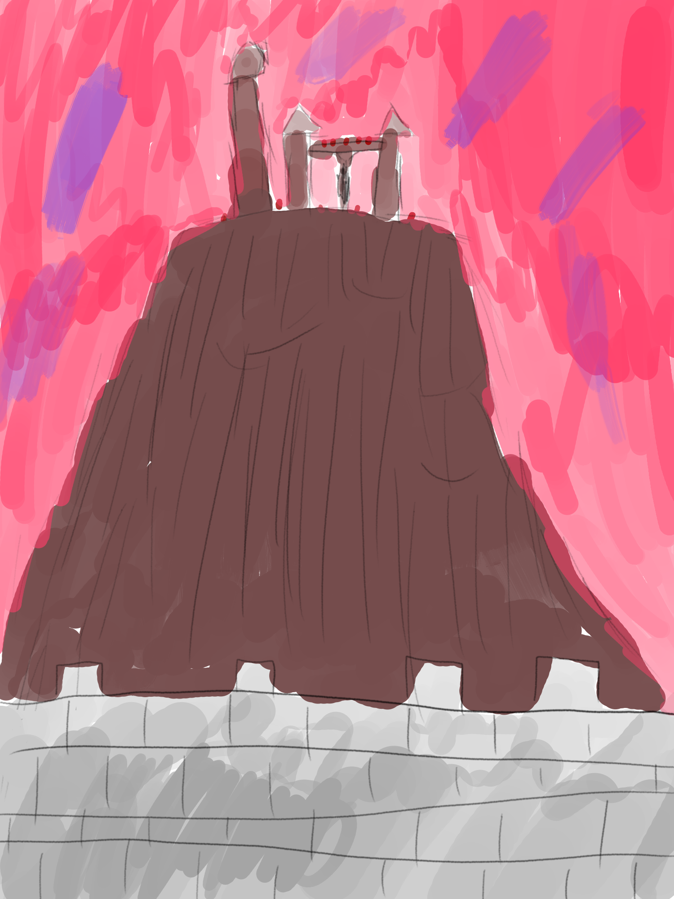

This night of 02-02-2025 (the one that end on this date), I made quite an interesting dream, and I decided it might be interesting to share what I remember of it publicly.
Note that illustration drawing, while being rather accurate on the shape of thing, are less accurate in regards to the details or texture (and are not the kind of good looking sketch. But they should fullfill their goal).
The dream started as I was outside of a castle that I was visiting (the building of interest is the visible keep)
This castle used to be the base of a dragon group whose story was told in books (while being unclear if this was a real story or just fiction having taken this castle as inspiration). In the dream, I remembered (while being uncertain even then) of the name of Eragon (a medieval-fantasy quadrilogy involving dragons I did read), thought the organisation itself might be more similar to those of the hero of Lego Ninjago or the guardians in The Legends Of Spyro, a.k.a a rather secluded group of heros.
I didn’t remembered well that book, but I did remembered it foundly, after having read it a long time ago
As I was there, I was particularly interested in a sculpture that was there (but not in view of the first image). It is to the left of it, on the other side of the building. This one show a much more damaged side of the building.
On this side was a crumbled part (on the left), with the castle wall still standing.
That’s quite a failed perspective.
The light gray box on top of the rumble depict sculpted dragon head (in stone). Too hard to properly depict. Also, the crumble on the left is probably a fully crumbled building (probably as a reference to my research on La Vergne-Griffeau castle, thought I’m unsure if the building crumbled or if it was just properly demolished)
Each dragon head also has a text laudating the dragon they depict (or some text like that. Not really sure it was laudating, but at least describing them)
They used to link to what is now part of the crumbled, destroyed wall. This is the art installation, by a female artist whom I don’t remember the name (I think it might be Zephiroth or Elisa). She likely is an expy of Voltara Dragoness (without claiming of anything I say about the dreamed artist is stuff Voltara did. I don’t remembered her having created sculpture or other stuff showcased later).
Curious about that (dreamed) artist, I decided to look up what she had created. So, on a smartphone connected to the internet, I searched her on a search engine, and found her website. The website showed that she wasn’t as interested in that book series than in the past (Equestria Girls was mentionned, thought). She also made a procedural music generator with a lot of configurable option. The algorithm worked by trying random permutation, optimising for a score measuring how good looking a generated music is (which would be how I would do it, and actually did a bunch of non-music procedural generation thanks to the stocastic simulated annealing). It wasn’t able to generate interesting loop, but it wasn’t too bad either. I also remember either Scratch or Snap! being what was used to make it (the fact this was in the FOSDEM schedule might provide a reason as of why this is mentionned).
(grmph. Krita and tablet under Wayland is still not very usable. Time to return to X)
I then did some more research on what she did, and I found an animated video illustrating a passage of the book.
The first scene was located inside the castle, on the 2nd floor. Inside this floor was present three character: The sage/leader of the organised group that is based at the castle, some secret agent (narrativelly similar to Impa from The Legends Of Zelda) and an ennemy emmisary (all were dragons). This happened while the ennemies was besieging the castle. What they were speaking about is unknown to me, but the group was confidant they could fight back this attack, as has happened a number of time in the past (ps: I had played The Elder Scrolls Online PVP the day before. It involve attacking and defending keeps).
Here is a top view map this time (cause otherwise I would have to draw organic creature). The Sage and the Ennemy (emmisary) are talking together, the (secret) agent observing them.
In the second scene, however, an immense mountain (that I wasn’t aware of up to now) is shown, adjacent to the castle. It is not very wide, but is very tall and have incline in the like of 70–80%, with cliffs. On top of it was a pair of tower (guard-tower style, not residential ones, about 20m high) with a bridge linking them, Dwemer style (as can be seen at different places in TESO and Morrowind, for example in north–west TESO Vvanderfell). A third higher tower was also present. All of this was obviously under the control of the ennemy, which make the situation much more menacing. And all of this was with a worrying red tone.
note: The red dots represent ennemy soldiers
I don’t really remembered well what happened afterward. I do remembered I stopped watched the video, and went thought the arch (as seen on the first image), probably to go to the next place to visit.
As far as for what the dragon look, I don’t even remember if they are four or two legged (with the wing acting as leg as in Skyrim). They are at least small enought to not need big interior. (heck, they may even be two legged and stand up right. It’s as far as I don’t remember them).
In any case, this is the end, I hope it was interesting (also I put date-based sorting in the blog post list, as well as displaying the post language there. Also, I wonder if I should make a naive templating format as ugly as PHP but with Nix instead... (and fully static. And lazy.). Or convert everything to non-static but non-modifiable Rust like my rom-hack archive.).